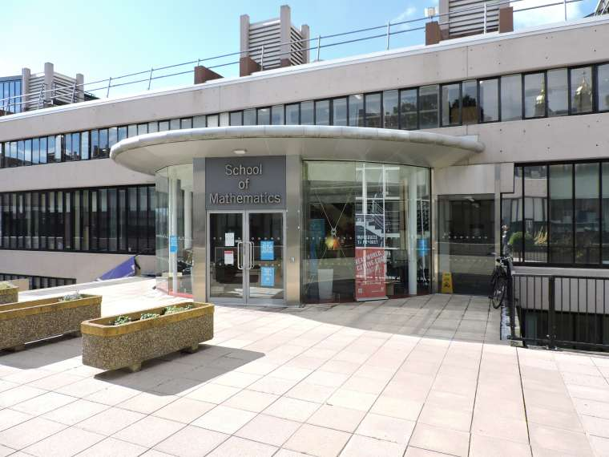

Workshop: Practical and Structural Model Theory
Leeds, July 25-29, 2022


Workshop: Practical and Structural Model Theory
|
|
|
|
|
- on the occasion of the 60th birthdays of Ya'acov Peterzil and Sergei StarchenkoScope:
The workshop is planned to take place during the second week of the 3-week program Unimod 2022. Limited funding has become available by the NSF for US-based participants. To apply, please write to the email address below. For any information, please contact: ps.workshop2022@gmail.com |
 |
Model theory of o-minimal structures:
- Alessandro Berarducci (University of Pisa)
- Annalisa Conversano (Massey University)
- Mario Edmundo (University of Lisbon)
- Jana Marikova (University of Vienna)
- Dave Marker (University of Illinois at Chicago)
- Charles Steinhorn (Vassar College)
Interactions and applications of o-minimality:
- Matthias Aschenbrenner (University of Vienna)
- Gal Binyamini (Weizmann Institute of Science)
- Lou van den Dries (University of Illinois at Urbana-Champaign)
- Gareth Jones (University of Manchester)
- Chris Miller (Ohio State University)
- Jonathan Pila (University of Oxford)
- Tamara Servi (Université Paris-Cité)
- Patrick Speissegger (McMaster University)
- Jacob Tsimerman (University of Toronto)
Model theoretic generalizations:
- Elisabeth Bouscaren (Université Paris-Sud)
- Artem Chernikov (University of California at Los Angeles)
- Deirdre Haskell (McMaster University)
- Philipp Hieronymi (University of Bonn)
- Ehud Hrushovski (University of Oxford)
- Rahim Moosa (University of Waterloo)
- Alf Onshuus (Universidad de Los Andes)
- Tom Scanlon (University of California at Berkeley)
- Katrin Tent (University of Münster)
- Boris Zilber (University of Oxford)
|
School of Mathematics University of Leeds Leeds LS2 9JT |
 |
| Travel Info | |
|---|---|
| Arriving at Leeds |
The closest ariports are the Leeds Bradford Airport (LBA) and the Manchester Airport (MAN). The Leeds Bradford Airport has a Flyer service (A1) taking you to the city centre, more info on the LBA website. The Manchester Airport has a train station and a coach station: a trip to Leeds takes between 1 and 2 hours, tickets for both can be bought online (e.g. via the trainline app). Make sure your flight time is consistent with the train/coach times as there may be no services between 1am and 4am. Uber would cost about 90 pounds. |
| Once in Leeds | Reaching the University campus from the train station on foot takes about 20 minutes whereas from the coach station about 30 minutes; you may consider taking a bus: tickets can be bought online via the trainline app. Uber is a good alternative with cost about 5 pounds. |
| Venues | |
|---|---|
Mathematics Building (School of Mathematics):Registration will happen at the School of Mathematics reception, on Level 9 of this building. Coffee breaks will be offered on Level 9 too. Participants are encouraged to use spaces on Level 9 of the School of Mathematics for individual study and the MALL on Level 8 for discussions and collaborations. |
 |
Roger Stevens Building (General Teaching Space):Lectures will take place in Lecture Theater 20 on Level 7+. Level 10 of the building is reachable from Level 10 of the Mathematics Building through a connecting bridge (there will be signs along this route). Other entrances are on lower ground (Level 6) and ground floor (Level 7). |
 |
Coach Trip to the Yorkshire Sculpture Park (link): The Yorkshire Sculpture Park is an open-air gallery located about 40 minutes away from Leeds, showing work by British and international artists, including Henry Moore and Barbara Hepworth. This trip offers a great opportunity for some local culture!
Coach Trip to York (link): York is one of the most picturesque towns in the north of England, around one hour from Leeds by bus. We will offer recommendations for nice restaurants and pubs as well as local attractions. A great choice for those who interested in beautiful architecture and nice beer!
Hiking Trip to Myrtle Tavern (link): An hour and a half (but not very demanding) hiking trip from the centre of Leeds through the beautiful Meanwood forest ending in a traditional British pub. A great choice for those who are feeling more adventurous and want to explore the beautiful Yorkshire countryside!
There will be coffee and food offered during coffe-breaks.
For lunch it is recommended to go nearby places: within the campus, in the University Union Building, very close to the School of Mathematics, there is a refectory and various food shops and restaurants.
As for dinner or evening drinks, the following is a list of recommended pubs and restaurants: Assembly, Trinity Kitchen, Mythos, Red Chillies, Fenton, Thai Edge, Ox Club, Sushi Waka, Zumuku Sushi, Sushibar Hanamatsuri, Bundobust, Kendell's Bistro, Bill's Leeds Restaurant, Akbars, Brudenell Social Club, Foley's Tap House, Whitelocks.
Social dinner: There will be a social dinner at the Bengal Brasserie in Merrion Way, Leeds City Centre (link to webpage) on Thursday the 28th of July, 7:30pm.
You may register
here by April 15, 2022.
The default arrival - departure dates are July 24 - 30, 2022 (the lectures will begin on July 25 in the morning and end on July 29 in the afternoon).
| Pablo Andujar Guerrero | Fields Institute, Canada |
| Matthias Aschenbrenner | University of Vienna, Austria |
| Vahagn Aslanyan | University of East Anglia, UK |
| Robert Barham | Imperial College London, UK |
| Martin Bays | Universität Münster, Germany |
| Alessandro Berarducci | University of Pisa, Italy |
| Thomas Bernert | University of Leeds, UK |
| Gal Binyamini | Weizmann Institute of Science, Israel |
| Elisabeth Bouscaren | CNRS - Université Paris-Saclay, France |
| Zoe Chatzidakis | École Normale Supérieure de Paris, France |
| Artem Chernikov | University of California at Los Angeles, USA |
| Annalisa Conversano | Massey University Auckland, New Zeland |
| Christian d'Elbée | Fields Institute, Canada |
| Anna Dmitrieva | University of East Anglia, UK |
| Jan Dobrowolski | University of Manchester, UK |
| Lou van den Dries | University of Illinois at Urbana-Champaign, USA |
| Christine Eagles | University of Waterloo, Canada |
| Mário Edmundo | University of Lisbon, Portugal |
| Ioannis Eleftheriadis | University of Cambridge, UK |
| Pantelis Eleftheriou | University of Leeds, UK |
| Felipe Estrada Pelaez | Universidad de Los Andes, Colombia |
| Sebastian Eterovic | UC Berkeley, USA/University of Leeds, UK |
| Florian Felix | HHU Düsseldorf, Germany |
| Guy Fowler | Leibniz University Hannover, Germany |
| Pietro Freni | University of Leeds, UK |
| Stuart Green | University of Leeds, UK |
| James Hanson | University of Maryland, College Park, USA |
| Andrew Harrison-Migochi | University of Manchester, UK |
| Deirdre Haskell | McMaster University, Canada |
| Assaf Hasson | Ben Gurion University, Israel |
| Yuyan He | University of California at Los Angeles, USA |
| Philipp Hieronymi | University of Bonn, Germany |
| Akash Hossain | Université Paris-Saclay, France |
| Jordan Houser | Independent |
| Ehud Hrushovski | University of Oxford, UK |
| Abdelrahman Ibrahim | American University in Cairo, Egypt |
| Chuyin Jiang | University of California at Los Angeles, USA |
| Gareth Jones | University of Manchester, UK |
| Tobias Kaiser | Universität Passau, Germany |
| Itay Kaplan | Hebrew University of Jerusalem, Israel |
| Charlotte Kestner | Imperial College London, UK |
| Joonhee Kim | Yonsei University, South Korea |
| Thibaut Kouptchinsky | UCLouvain, Belgium |
| Junguk Lee | KAIST, South Korea |
| Omar Leon Sanchez | University of Manchester, UK |
| Stefan Ludwig | École Normale Supérieure de Paris, France |
| Dugald Macpherson | University of Leeds, UK |
| Vincenzo Mantova | University of Leeds, UK |
| Jana Marikova | University of Vienna, Austria |
| Paolo Marimon | Imperial College London, UK |
| David Marker | University of Illinois at Chicago, USA |
| Raymond McCulloch | University of Manchester, UK |
| Nadav Meir | University of Wroclaw, Poland |
| David Meretzky | University of Notre Dame, USA |
| Chris Miller | Ohio State Unversity, USA |
| Shezad Mohamed | University of Manchester, UK |
| Ibrahim Mohammed | University of Leeds, UK |
| Rahim Moosa | University of Waterloo, Canada |
| Alf Onshuus | Universidad de Los Andes, Colombia |
| Adele Padgett | University of California at Berkeley, USA/McMaster University, Canada |
| Ricardo Jesús Palomino Piepenborn | University of Manchester, UK |
| Aris Papadopoulos | University of Leeds, UK |
| Ya'acov Peterzil | University of Haifa, Israel |
| Anand Pillay | University of Notre Dame, USA |
| Santiago Pinzon | Universidad de Los Andes, Colombia |
| Adrián Portillo | University of Wroclaw, Poland |
| Nigel Pynn-Coates | Ohio State Unversity, USA |
| Davide Emilio Quadrellaro | University of Helsinki, Finland |
| Tsinjo Rakotonarivo | WWU Stellenbosch University, South Africa |
| Simone Ramello | WWU Münster, Germany |
| Calliope Ryan-Smith | University of Leeds, UK |
| Tomasz Rzepecki | Uniwersytet Wrocławski, Poland |
| Thomas Scanlon | University of California at Berkeley, USA |
| Ilgwon Seo | Yonsei University, South Korea |
| Tamara Servi | Université Paris-Cité, France |
| Daoud Siniora | American University in Cairo, Egypt |
| Patrick Speissegger | McMaster University, Canada |
| Sergei Starchenko | University Notre Dame, USA |
| Charles Steinhorn | Vassar College, USA |
| Benedikt Stock | University of Oxford, UK |
| Michal Szachniewicz | University of Oxford, UK |
| Katrin Tent | Universität Münster, Germany |
| Margaret Thomas | Purdue University, USA |
| Mervyn Tong | University of Cambridge, UK |
| Pierre Touchard | Universitá degli Studi della Campania "Luigi Vanvitelli", Italy |
| Jacob Tsimerman | University of Toronto, Canada |
| Paul Wang | École Normale Supérieure de Paris, France |
| Alex Wilkie | University of Manchester/Oxford, UK |
| Kevin Zhou | University of Illinois at Chicago, USA |
| Boris Zilber | University of Oxford, UK |
| Tingxiang Zou | Universität Münster, Germany |
The workshop is made possible thanks to the kind support by the EPSRC, the Leeds School of Maths, the ASL and the NSF.
Student members of the ASL may apply for student travel awards following the guidelines mentioned here.
US-based participants may apply for a limited number of travel awards by writing to: ps.workshop2022@gmail.com